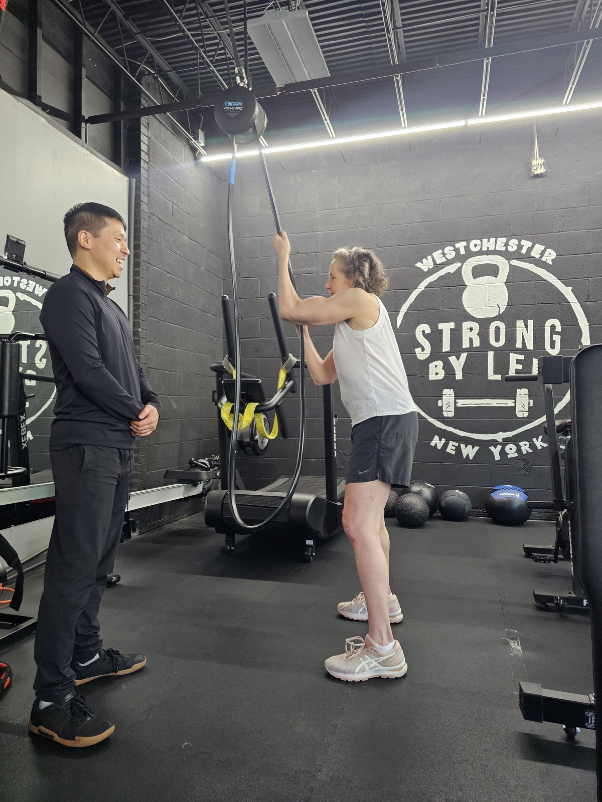
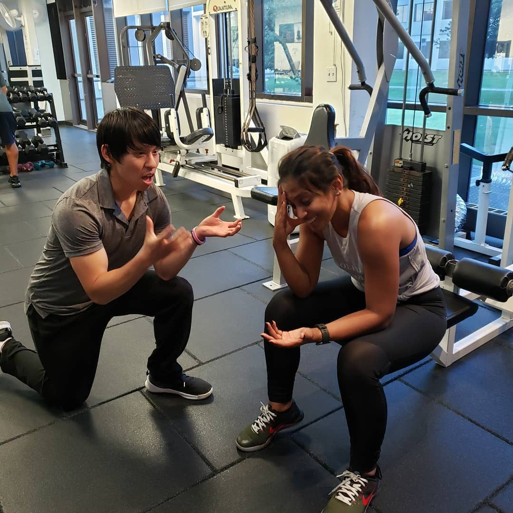
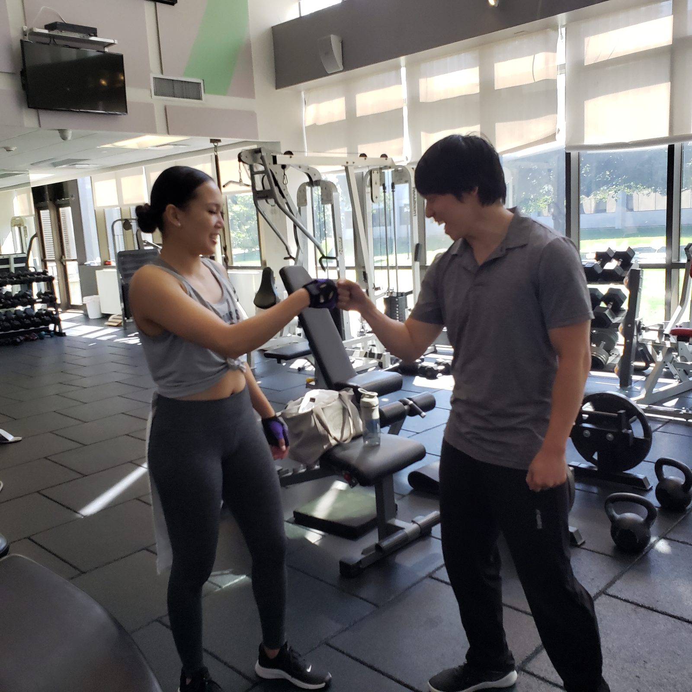

Here's what actually happened — and why it still drives everything I do.
"I didn't become a coach because I loved fitness. I became one because of a moment I didn't expect."
Growing up, sports weren't my thing. Confidence wasn't exactly my thing either. I was skinny, unsure of myself, and about as far from a gym rat as you could get. I didn't have a passion for fitness. I had a general discomfort with who I was physically, which is a different thing entirely.
After high school, I joined the United States Air Force — not out of patriotic calling, but out of practicality. No money for college. Not ready for the workforce. The military seemed like a reasonable third option.
Once you get past a certain rank in the Air Force — E-4, Senior Airman — promotion requires more than just doing your job. You need extracurricular points. Activities. Involvement. I had none of those things.
What I did notice was that you could become a Physical Training Leader. It seemed like the lowest barrier to entry. Tell people to run. Do some push-ups. How hard could it be?
What I didn't fully appreciate was that part of the role meant helping service members who were struggling with their fitness — people who were at risk of failing their physical fitness exams. In the military, failing twice means getting discharged. That's someone's career. Sometimes their livelihood. Sometimes their sense of identity.
"He knelt down, grabbed my hands, and cried. I didn't know it then, but that was the moment I became a coach."
There was one airman in particular. He'd already failed once. One more failure and he was out. We worked together over several months — consistently, carefully, building up what his body could do without breaking what it couldn't.
He passed. Barely. By the skin of his teeth, as they say.
And then he knelt down, grabbed my hands, and cried. And thanked me.
I didn't fully understand what had happened in that moment. I just knew that helping someone get through something genuinely hard — something with real stakes — felt like nothing else I'd experienced. When my service ended, I knew what I was going to do next.
I want to be straight with you about something: I still don't love working out. I'm 39 years old, 5'7", 155 pounds. I didn't play sports. I'm not chasing aesthetics or personal records.
I train because I want to stay strong and healthy for the things in my life that actually matter. Like being able to run with my kids without getting winded. Throw a ball. Wrestle on the floor. Be physically present for them in the ways that count.
That's it. That's my why.
And I think that's why so many of my clients feel understood when they walk in — because I'm not speaking to them from some elite athletic pedestal. I'm standing right next to them, doing the same uncomfortable thing, for the same very human reasons.
At some point I got curious enough to enter a powerlifting competition. My wife did too. Neither of us knew what we were doing. We just showed up consistently and did the work — and it turned out that was enough. I try to remember that when a client tells me they're not athletic enough for this.
I also train on the same schedule as my clients — deliberately. A lot of trainers work out every day, sometimes twice. That's not my clients' reality, and it's not mine either.
A core philosophy of mine: meet my clients where they are. If they can only train two or three times a week, will take vacations, face setbacks, and have weeks when the gym simply isn't the priority — but still want to move in the right direction — then I should be able to work within those same constraints. And I do.



After a decade of working with real people — not athletes, not fitness enthusiasts, just regular people with full lives — I've learned that most fitness programs fail not because of bad programming, but because they ignore the human being inside the program.
My job isn't just to design workouts. It's to understand what's actually going on with you — your schedule, your history, your hesitations — and build something that fits your life, not the other way around.
Fitness is uncomfortable and takes time. I won't pretend otherwise. But I'll tell you exactly what to expect and be there through all of it.
Every program is built around you specifically — your body, your goals, your injuries, your life. Not a modified version of someone else's plan.
Consistency comes from connection. My clients stay not just because the workouts work — but because they genuinely enjoy showing up.
As a registered dietitian, I don't hand off the nutrition conversation to someone else. It's built into how I coach from day one.
Veteran and former Physical Training Leader. Where the coaching began — helping service members pass the tests that mattered to them.
A credential that takes years to earn and means I can bridge training and nutrition in ways most personal trainers simply can't.
Based in White Plains, NY, serving the Westchester area. A decade of working with people across every age, fitness level, and starting point imaginable.
No pressure. No hard sell. Just a chance to talk and see if we're a good fit.
Book Your Free ConsultationThe first session is really just a conversation.